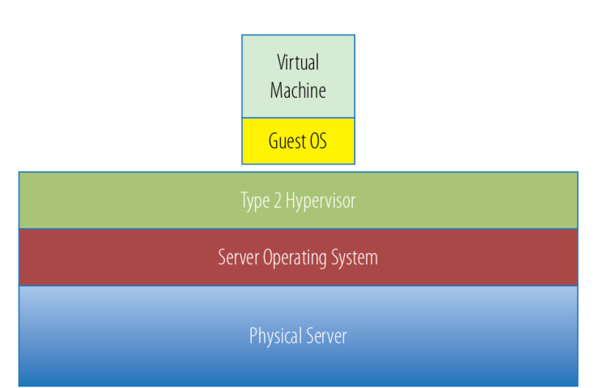
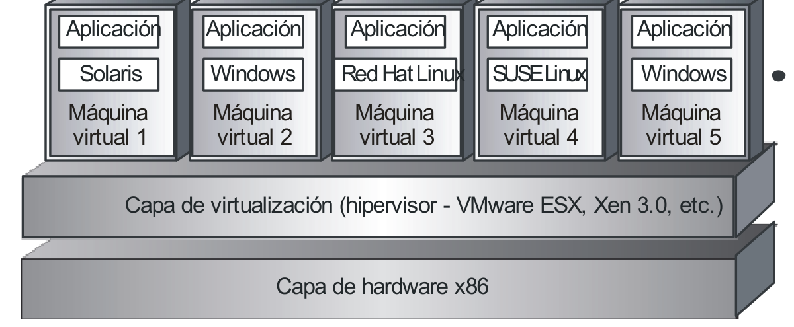
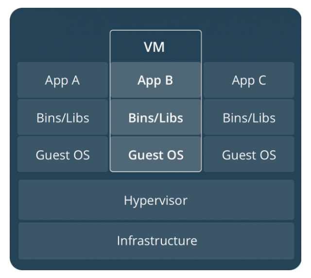
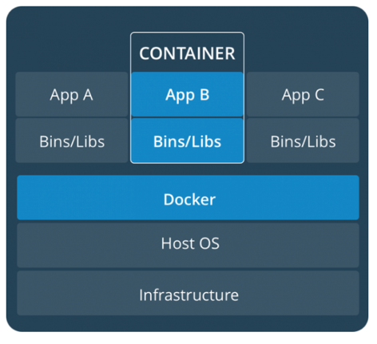
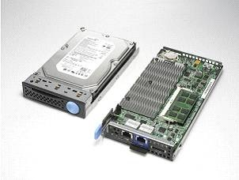
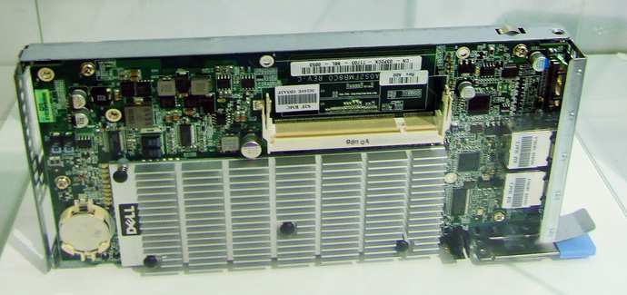

Virtualización de Servidores
Tema 3 de 13 Cuarto curso, 1.º cuatrimestre ≈ 14 min de lectura
Temas de ENCO · 3/13
- 1. Formatos de Servidores - Racks y Blades
- 2. Centros de Procesamiento de Datos (CPDs)
- 3. Virtualización de Servidores
- 4. Dispositivos de Almacenamiento
- 5. Subsistemas de Disco
- 6. Fibre Channel y redes SAN
- 7. Almacenamiento IP
- 8. Sistemas de ficheros y almacenamiento en red
- 9. Virtualización del almacenamiento
- 10. Backup
- 11. Backup en red y software para backup
- 12. Archivado de la información
- 13. Hardware para backup
3.1 Virtualización, agregación y consolidación
La virtualización de servidores independiza las funciones de un servidor de la máquina física que lo ejecuta. Gracias a eso, un servidor virtual se puede migrar de una máquina física a otra, y una misma máquina física se puede compartir entre varios servidores virtuales.
Conviene distinguir tres conceptos que van juntos:
| Concepto | Qué es | Ejemplo |
|---|---|---|
| Agregación | Varios recursos físicos se combinan para actuar como un único sistema | Un clúster |
| Virtualización (o, menos usado, disgregación) | Un servidor físico se divide en varios servidores virtuales | Un host con 5 VMs |
| Consolidación | Las funciones de varios servidores físicos infrautilizados se pasan a servidores virtuales que se colocan en menos servidores físicos | 10 servidores al 15% de uso → 2 servidores físicos |
Analogía: la mudanza a un piso compartido
Consolidar es como juntar a cinco personas que vivían solas en pisos medio vacíos en un único piso grande con habitaciones separadas (las VMs): se paga un solo alquiler y se aprovecha el espacio. Agregar es lo contrario: unir varios pisos pequeños para que funcionen como una sola casa.
3.2 Orígenes
La virtualización nació en la época de los mainframes y es parte de la razón de su éxito durante tantos años. Gracias a las máquinas virtuales, un mainframe podía ejecutar varias instancias de un sistema operativo y emular sistemas antiguos, de modo que una empresa podía comprar un mainframe nuevo y seguir ejecutando su software antiguo.
En 2001, VMware se dio cuenta de que no había productos similares para PCs y estaciones de trabajo. Sus productos dominaron el mercado durante años, permitiendo a usuarios de Unix, Linux, Windows y macOS usar otros sistemas operativos. Hoy hay muchas empresas y proyectos de código abierto que permiten virtualizar en todo tipo de plataformas.
3.3 Formas de virtualización de servidores
Hay seis formas, de la más lenta a la más eficiente: emulación, particionamiento hardware, virtualización a nivel del SO, anfitriones (hosted), paravirtualización e hipervisores.
3.3.1 Emulación
Es la forma más sencilla y menos eficiente. El emulador recrea por software un entorno completo, incluidas todas las instrucciones de la CPU y los dispositivos de E/S, así que un SO puede ejecutarse sin modificarlo sobre otra plataforma. Su gran ventaja es que se puede emular una CPU distinta a la del servidor físico; su gran desventaja, que el rendimiento cae muchísimo (cada instrucción se traduce por software).
Se usa para acceder puntualmente a aplicaciones de plataformas que no tenemos, emular hardware obsoleto que ya no existe y con fines educativos. Un emulador muy extendido y de código abierto es QEMU, que traduce dinámicamente el código que ejecuta; aunque KVM con QEMU ya no hace emulación pura, sino que añade elementos de virtualización real.
3.3.2 Particionamiento hardware
Consiste en dividir los recursos de un sistema en particiones, a cada una de las cuales se le asigna una o más CPUs, una cantidad de memoria física y canales de E/S. Cada partición ejecuta su propia instancia del SO, pero tiene que ser el mismo SO en todas. Se puede hacer por software o por hardware; cada partición gestiona sus recursos sin compartirlos, aunque se puede permitir redistribuirlos dinámicamente. La mayoría de los sistemas operativos tienen versiones que lo soportan.
3.3.3 Virtualización a nivel del sistema operativo
Un único SO crea múltiples entornos virtuales de sí mismo. Cada instancia corre en su propio entorno, pero todas comparten los mismos recursos, que se pueden reasignar para dar calidad de servicio. Su ventaja es que el overhead (sobrecoste) es mínimo, pero, de nuevo, todas las instancias usan el mismo SO. Ejemplos: Solaris Containers de Sun (solo Solaris) y Virtuozzo (Windows o Linux, nunca los dos a la vez).
Para entenderlo mejor
OS-level virtualization (Wikipedia) — más ejemplos de virtualización a nivel de SO y su comparación (artículo, inglés; enlazado en las diapositivas).
3.3.4 Anfitriones (hosted approach)
La capa de virtualización (hipervisor de tipo II) corre sobre un SO anfitrión (host), y los servidores virtuales corren sobre ella. La ventaja es que permite SO distintos. Las desventajas: la E/S atraviesa todas las capas y es lenta, cada capa consume recursos, y por eso no se recomienda para aplicaciones con mucha E/S. Ejemplos: Oracle VM VirtualBox y VMware Server. Productos como VirtualBox están evolucionando hacia la paravirtualización de la E/S para mejorar.

De abajo arriba: servidor físico, SO del servidor, hipervisor de tipo 2 y la máquina virtual con su SO invitado.3.3.5 Paravirtualización
Usa sistemas operativos ligeramente modificados para correr virtualizados. El SO invitado usa una API especial para comunicarse con la capa de virtualización, lo que le da un acceso relativamente directo al hardware y mejora el rendimiento. Ejemplos: el hipervisor Xen cuando funciona sin soporte hardware para la virtualización, o IBM LPAR.
3.3.6 Hipervisores
Es una capa de virtualización muy ligera que se carga directamente sobre el hardware, sin SO anfitrión (hipervisor de tipo 1 o bare-metal). El hipervisor crea las máquinas virtuales, y sobre ellas corren los SO invitados. Son más ligeros y eficientes que el enfoque de anfitriones. Ejemplos: VMware ESXi (antes ESX), Xen 3.0 y Hyper-V de Microsoft.

Cinco máquinas virtuales con SO distintos (Solaris, Windows, Red Hat, SUSE, Windows) sobre la capa de virtualización, que corre directamente sobre el hardware x86.| Forma | ¿SO distintos? | Rendimiento | Ejemplos |
|---|---|---|---|
| Emulación | Sí (incluso otra CPU) | Muy bajo | QEMU |
| Particionamiento hardware | No (mismo SO) | Alto | — |
| Nivel de SO | No (mismo SO) | Muy alto (overhead mínimo) | Solaris Containers, Virtuozzo |
| Anfitriones (tipo II) | Sí | Bajo en E/S | VirtualBox, VMware Server |
| Paravirtualización | Sí (SO modificado) | Alto | Xen sin soporte HW, IBM LPAR |
| Hipervisor (tipo 1) | Sí | Alto | VMware ESXi, Xen 3.0, Hyper-V |
3.3.7 Soporte hardware en x86
La arquitectura x86 tiene 4 niveles de privilegio (rings), del 0 al 3: el SO corre en el nivel 0 (el de más privilegio) y las aplicaciones en el 3. Para virtualizar, el hipervisor solía ocupar el nivel 0 y desplazaba al SO al nivel 1 o incluso al 3 (paravirtualización en Xen), modificándolo para que no accediera al nivel 0 sin pasar por el hipervisor.
Las extensiones Intel VT (Virtualization Technology) y AMD-V resuelven esto añadiendo un nivel -1 para el hipervisor: así el SO puede seguir en el nivel 0 y las aplicaciones en el 3, sin modificar nada.
Analogía: el portero del edificio
El nivel 0 es la llave maestra del edificio, y el SO está acostumbrado a tenerla. Antes, para poner un hipervisor, había que quitarle la llave al SO y dársela al portero (el hipervisor), y el SO tenía que pedírsela cada vez. Con VT-x/AMD-V se crea un nivel por encima (-1), una "llave del propietario": el SO conserva su llave maestra y el hipervisor vigila desde arriba.
3.3.8 Contenedores
Un contenedor incluye todo lo necesario para ejecutar un pequeño programa: el código, sus dependencias e incluso partes del sistema operativo, lo que permite ejecutarlo casi en cualquier sitio. Depende del SO del host y de una herramienta que gestiona los contenedores, como Docker.
Cada contenedor comparte el kernel del SO del host y, normalmente, sus binarios y bibliotecas, que son de solo lectura. Al compartir estos recursos, apenas hay que replicar código del SO en el contenedor, así que los contenedores son excepcionalmente ligeros.


Izquierda: cada VM lleva su propio SO invitado (Guest OS) sobre el hipervisor. Derecha: los contenedores comparten el SO del host a través de Docker y solo llevan la aplicación y sus bibliotecas.La diferencia principal: al virtualizar un SO se instala y ejecuta el 100% del SO (kernel, entorno, librerías, dependencias...); con contenedores solo se crea lo mínimo (librerías y dependencias necesarias para la tarea). Los contenedores convienen cuando se necesita una aplicación concreta o varias instancias de un servidor (por ejemplo, varios servidores web Apache).
Para entenderlo mejor
¿Virtualización vs contenedores? Máquinas virtuales vs Docker — la diferencia de fondo entre ambos enfoques (vídeo, 7:30).
3.4 Gestión de entornos virtualizados
Con la virtualización y la consolidación, el número de servidores (virtuales) se multiplica, aparecen nuevas tareas de administración y hacen falta herramientas de gestión adaptadas. Necesitan cuatro funcionalidades:
Gestión y monitorización de recursos. Como los recursos están compartidos, hay que saber en cada momento cuánto se usa de cada uno para balancearlos, asignando CPU, memoria, etc., a las VMs que lo necesiten, y poder añadir o quitar recursos, mejor en caliente (sin parar).
Mover máquinas virtuales en caliente. Para balancear la carga entre servidores físicos y dar recursos a las VMs que los piden, interesa mover VMs de un servidor físico a otro. Algunos productos lo hacen en caliente (VMware), otros requieren parar la VM y otros no lo permiten.
Utilidades de migración. Migrar es pasar de un entorno a otro. El caso más útil es de físico a virtual (P2V): se congela el estado del servidor físico (snapshot) y se lleva al entorno virtual. Si la virtualización no da los resultados esperados, se puede volver con virtual a físico (V2P). También existen herramientas físico a físico (P2P) y virtual a virtual (V2V); estas últimas se confunden con las de mover VMs.
Administración basada en políticas (reglas). Ante eventos inesperados (normalmente fallos), puede hacer falta aplicar una secuencia de cambios que afecta a gran parte del sistema. Por eso conviene que las herramientas apliquen esos cambios automáticamente, siguiendo reglas definidas de antemano, sin intervención de los administradores.
3.5 Otros tipos de virtualización
- Del almacenamiento: una capa de abstracción entre el almacenamiento y los servidores, que elimina la asignación de discos físicos concretos a cada servidor; optimiza el uso del disco, añade RAID y otras funciones y facilita migrar VMs entre servidores físicos.
- De redes: se comparten las conexiones y otros dispositivos de red.
- De E/S: en servidores blade, se instalan menos dispositivos que servidores y se comparten de forma transparente (ver tema 1).
3.6 De los mainframes al cloud: un viaje de ida y vuelta
Los mainframes fueron clave en los años 60 y 70: centralizaban todo el procesamiento, con E/S especializada. En ellos nacieron innovaciones que muchos años después llegaron a los microordenadores: las memorias caché, la memoria virtual y la virtualización.
La huida de los mainframes. En la era del mainframe, este hacía todas las operaciones, incluso atender teclados y pantallas; con el tiempo, parte del trabajo pasó a los terminales. En los años 70 llegaron los microordenadores basados en microprocesadores; en 1981, el PC de IBM desató el boom de los ordenadores personales, y en 1982, Sun Microsystems lanzó las estaciones de trabajo en red. Después vino la era cliente/servidor: casi todos trabajaban con PCs, y para compartir ficheros surgieron las redes de área local y los servidores de ficheros; Internet fue el apogeo de este modelo.
La vuelta a los mainframes. El modelo cliente/servidor trajo problemas: administrar cientos o miles de PCs, falta de estandarización y proliferación de clientes. Llegó así la era de la consolidación: las aplicaciones corren en los servidores, con mínimos problemas de compatibilidad, gracias a la consolidación y la virtualización, hasta construir grandes CPDs para cloud computing. Es una vuelta al concepto de mainframe y la decadencia del ordenador personal.
El cloud computing es la última tendencia del procesamiento centralizado: las empresas que gestionan grandes CPDs ofrecen infraestructura (IaaS), como AWS, Microsoft Azure y Google Compute Engine; plataformas (PaaS), como Google App Engine y Windows Azure, y software (SaaS), como Google Apps y Dropbox.
En resumen, la centralización facilita la administración, y la consolidación aprovecha mejor los recursos: un servidor que funcionaba entre el 20% y el 90% de su capacidad pasa a estar compartido por 2 a 5 VMs, y los discos con distintos niveles de uso, consolidados, aumentan la capacidad lógica del sistema. La tecnología ha evolucionado de forma cíclica: los PCs dieron libertad, y la centralización reduce los costes de adquisición y administración.
Analogía: el péndulo
Es como un péndulo: de todo centralizado (mainframe) a todo repartido (un PC por persona) y de vuelta a centralizado (la nube), porque cada extremo resuelve los problemas del anterior y crea los suyos.
3.7 Fisicalización
La consolidación también tiene problemas: aumenta la densidad de calor en los racks, el hardware específico para servidores es muy caro, y muchas aplicaciones no necesitan gran potencia de cálculo, pero sí mucho ancho de banda para mover datos.
La fisicalización es la propuesta contraria de Rackable Systems (hoy SGI): crear un nuevo formato de servidor con hardware barato y de bajo consumo y eliminar la virtualización, de modo que cada proceso corra en su propio servidor físico. Está indicada para buscadores de Internet y servidores web que consultan una base de datos.
Estos servidores, llamados microservidores (un formato que se intenta estandarizar), meten varios servidores en 1U, mantienen cierto soporte para virtualización, usan procesadores baratos y de bajo consumo y consumen menos de 10 kW por rack. El ahorro viene de usar componentes de consumo: un Xeon puede costar el triple que su equivalente casi idéntico Core i7; un disco SATA puede ser 5 veces más barato que uno SAS o Fibre Channel, y la memoria para servidores es bastante más cara que la convencional.
Hoy los ofrecen empresas como HP o Dell. Un ejemplo es el Dell Fortuna (2009): un chasis de 2U con dos opciones, 12 discos en el frontal y 12 servidores detrás o 18 servidores; procesadores VIA Nano; cada servidor consume solo 29 W (15 W en reposo), incluye memoria y 2 interfaces Ethernet y cuesta unos 400 $.


Cada servidor es un módulo extraíble con su disco y una placa mínima.3.8 Ideas clave
- Virtualización (1 físico → varios virtuales), agregación (varios físicos → 1 sistema, p. ej. clúster), consolidación (muchos físicos infrautilizados → menos físicos).
- Origen en los mainframes; VMware la lleva al PC en 2001.
- Formas: emulación (otra CPU, muy lenta; QEMU), particionamiento HW (mismo SO), nivel de SO (mismo SO, overhead mínimo; Solaris Containers, Virtuozzo), hosted/tipo II (SO distintos, E/S lenta; VirtualBox), paravirtualización (SO modificado; Xen, IBM LPAR), hipervisor tipo 1/bare-metal (ESXi, Xen, Hyper-V).
- x86: rings 0-3; Intel VT / AMD-V añaden el nivel -1 para el hipervisor.
- Contenedores: comparten el kernel del host (solo lectura), muy ligeros; VM = 100% del SO.
- Gestión: monitorizar recursos, mover VMs en caliente, migración P2V, V2P, P2P, V2V, administración por políticas.
- Otras virtualizaciones: almacenamiento, redes, E/S.
- Historia cíclica: mainframe → PC/cliente-servidor → consolidación/cloud (IaaS, PaaS, SaaS).
- Fisicalización: lo contrario, un proceso por servidor físico barato (microservidores, Dell Fortuna: 29 W, ~400 $).